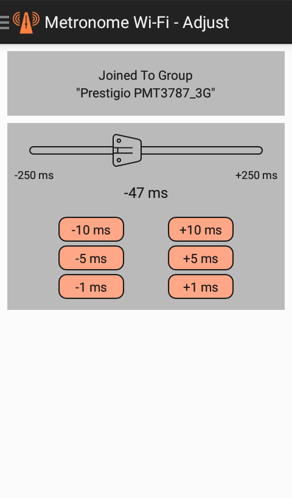

Sometimes the rhythm on different devices of the same group sounds out of sync. You can adjust the rhythm out of sync with the group owner.
The upper section of this screen contains the connection information, since the adjustment is available only when you are part of a group and are not its owner. This is done to prevent accidental changes to the adjustment, since it manifests itself when interacting with another device.
The next section is directly for adjustment and is hidden when it is not available. Any adjustment is determined for the specific group owner, and the application saves this value to set it when joint occurs.
